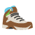

Les Randonnées a faire à Marseille
 Visite des vieux quartiers de Marseille
15.38km
+209m
-214m
4h55
Facile
Départ à Marseille - 13 -Bouches-du-Rhône
Nous allons faire un circuit dans les vieux quartiers de Marseille. Le célèbre quartier du Panier, le Vieux Port pour voir les étals de poissons (à faire le matin). Le quartier Saint-Victor où nous irons acheter des Navettes (petits gâteaux). Nous monterons à la Bonne Mère (Notre-Dame-de-la-Garde ) et nous descendrons visiter le quartier d' Endoume, jusqu'au Vallon des Auffes. Enfin, le bord de mer par la Corniche, le jardin du Pharo puis la traversée du vieux port en Ferry Boat (gratuit).
Le Parc Borely et les bords de l'Huveaune
7.39km
+13m
-13m
45min
Facile
Départ à Marseille - 13 -Bouches-du-Rhône
Randonnée très facile à vélo ou VTT, empruntant majoritairement les quelques pistes cyclables dont dispose la ville, permettant de découvrir le Boulevard Michelet et l'Avenue du Prado vers la mer, puis le Parc Borely et enfin les berges de l'Huveaune. Cette randonnée peut être faite par n'importe quel temps (elle est assez ombragée) mais on doit tenir compte des heures de fermeture du parc Borely.
La Corniche de Marseille, Notre-Dame de la Garde et le Parc Borély
22.12km
+281m
-280m
2h30
Moyenne
Départ à Marseille - 13 -Bouches-du-Rhône
Beau circuit en bord de mer et dans la ville, empruntant majoritairement des pistes cyclables, trottoirs ou parc autorisés. D'une difficulté "Moyenne", elle devient "Facile" si on réalise la variante qui permet d'éviter la boucle vers la basilique de Notre-Dame de la Garde. Mais l'on se prive alors de points de vues et de panoramas féeriques sur Marseille et sa rade.
Croix de Saint-Marcel et Vallon de la Barasse
7.43km
+315m
--318m
2h45
Moyenne
Départ à Marseille - 13 -Bouches-du-Rhône
Randonnée très agréable qui vous emmène dans un premier temps sur les hauteurs de Saint-Marcel avec un point de vue superbe sur Marseille, l'Île du Frioul, le massif du Garlaban et de la Sainte-Baume. Elle se poursuit dans le vallon de la Barasse sur un sentier qui chemine le long du ruisselet des Eaux Vives.